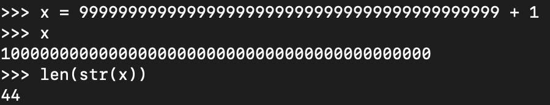

Associate Teaching Professor
Carnegie Mellon University
What happens when numbers get too big for a computer to work with?
For example, a 64-bit unsigned integer can be as large as 18,446,744,073,709,551,615. That is... huge. But what if it isn't enough?
Enter bignums, or arbitrary-precision numbers. These very, very large numbers allow you to go beyond CPU limitations for representing integers and performing arithmetic, limited only by the computer's memory.
If you open up Python and throw some really, really big numbers at it, you'll see that it works without any issue. Although C requires using a library for bignums, Python supports them right out of the box. In fact, you can use big numbers and small numbers interchangeably and it is completely abstracted away from the programmer.
I've always wanted to know how these bignum libraries work, so this is my adventure in learning about them.
Since Python supports them, I thought I'd just go learn from CPython's implementation. It can be found in longobject.c. Nearly 6000 lines and 100 functions.
Nevermind. It is more fun to learn from doing, so I'll implement a bignum library myself! I'm going to use C but the approach should be similar in most languages. You can see my code on GitHub.
I had an initial theory of how bignums work: treat numbers as strings and manually perform arithmetic on the digits as you would on a piece of paper. So that is what I did.
typedef struct {
char *digits;
int size;
} BigNum;
This BigNum struct will represent our numbers by storing an array of digits. Next we need a way to initialize a BigNum with a value.
void bignum_init(BigNum *n, const char *str) {
n->size = strlen(str);
n->digits = malloc(n->size * sizeof(char));
for (int i = 0; i < n->size; i++) {
// Store digits in reverse. Convert from ASCII.
n->digits[i] = str[n->size - 1 - i] - '0';
}
}
This lets us initialize a BigNum with a value from a string. It allocates memory based on how many digits the number has. It subtracts '0' from the digits to convert the ASCII value to the numeric value (e.g., '3' is 51 in ASCII so subtracting '0' gives us the numeric value, 3).
We then store the digits in reverse order. This makes some of the arithmetic logic easier later, like for carrying. So the number 123 will become [3, 2, 1].
Now we can create a BigNum like so:
BigNum a; bignum_init(&a, "12345678901234567890");
We can free the memory by using:
void bignum_free(BigNum *n) {
free(n->digits);
n->digits = NULL;
n->size = 0;
}
We don't really know if our code is working as expected though, so let's implement a print function.
void bignum_print(BigNum *n) {
printf("BigNum: ");
for (int i = n->size - 1; i >= 0; i--) {
printf("%d", n->digits[i]);
}
printf("\n");
}
It loops through the digits, starting with the last element in the array, and print each of them as integers.
Try it and you'll see we can now represent really big numbers. It is pretty boring though since we can't do anything with them other than look at them.
It is necessary to compare numbers, like a > b or a == b. We will implement a comparison function to handle greater than, less than, and equal to.
int bignum_compare(const BigNum *a, const BigNum *b) {
if (a->size != b->size) {
return a->size > b->size ? 1 : -1;
}
for (int i = a->size - 1; i >= 0; i--) {
if (a->digits[i] != b->digits[i]) {
return a->digits[i] > b->digits[i] ? 1 : -1;
}
}
return 0;
}
Let's walk through it. First, we compare the size (how many digits) of both numbers. This easily tells us if a number is bigger than another. We return 1 if a > b and -1 if a < b.
If the numbers have the same number of digits, then we do to do a digit by digit comparison. We start with the most significant digit and go until a difference is found or there are no more digits. If the numbers are equal, we return 0.
Here is how you can try it:
int main() {
BigNum a, b;
bignum_init(&a, "12345678901234567890");
bignum_init(&b, "98765432109876543210");
bignum_print(&a);
bignum_print(&b);
int cmp = bignum_compare(&a, &b);
if (cmp > 0) {
printf("a is greater than b\n");
} else if (cmp < 0) {
printf("a is less than b\n");
} else {
printf("a is equal to b\n");
}
bignum_free(&a);
bignum_free(&b);
return 0;
}
You should be greeted with a is less than b when you run it.
We are finally to the fun stuff: arithmetic!
The add function will work the same as you learned in grade school. Start with the least significant digits, add them, carry the 1 if necessary, and repeat for the next column.
void bignum_add(BigNum *result, const BigNum *a, const BigNum *b) {
int max_size = a->size > b->size ? a->size : b->size;
result->digits = malloc((max_size + 1) * sizeof(char));
int carry = 0;
int i;
for (i = 0; i < max_size || carry; i++) {
int sum = carry + (i < a->size ? a->digits[i] : 0) + (i < b->size ? b->digits[i] : 0);
result->digits[i] = sum % 10; // Store the last digit of the sum.
carry = sum / 10; // Carry any overflow.
}
result->size = i;
}
Let's break down how this works. First, we determine how many digits the result might be by taking the size of the bigger number and adding 1. For example, if the addition involved 99 + 3 then our bigger operand is 2 digits but we add 1 to handle the case of carrying over to a third digit (like our example would require). Then we allocate memory for a BigNum of that size.
The loop looks more complex than it is. At each iteration, add the corresponding digits from both operands without going out of bounds of each array. If either of the arrays go out of bounds, treat the digit as a 0. Also handle the carry. Continue the loop while there are still digits or there is a carry.
Test it out on a variety of combinations, big and small, small and big, same sizes, different sizes, etc.
int main() {
BigNum a, b, sum;
bignum_init(&a, "12345678901234567890");
bignum_init(&b, "98765432109876543210");
bignum_print(&a);
bignum_print(&b);
bignum_add(&sum, &a, &b);
bignum_print(&sum);
bignum_free(&sum);
bignum_free(&a);
bignum_free(&b);
return 0;
}
It should print the sum as 111111111011111111100.
Yippee! Our addition is working!
Following a similar pattern as addition, multiplication won't be that difficult to implement. It too will use a grade school algorithm: multiply each digit of the first number by each digit of the second number, and then add all the results together.
void bignum_multiply(BigNum *result, const BigNum *a, const BigNum *b) {
result->digits = calloc(a->size + b->size, sizeof(char));
result->size = a->size + b->size; // Max size we will need.
for (int i = 0; i < a->size; i++) {
for (int j = 0; j < b->size; j++) {
int index = i + j;
result->digits[index] += a->digits[i] * b->digits[j];
result->digits[index + 1] += result->digits[index] / 10;
result->digits[index] %= 10;
}
}
// Trim any leading zeros
while (result->size > 1 && result->digits[result->size - 1] == 0) {
result->size--;
}
}
It starts by determining the upper bound of how many digits the multiplication could produce and allocates them with zeroed values.
Then we have a nested loop based on the lengths of the operands. At each iteration, we multiply the corresponding digits and add it to result's corresponding digit. Then move any overflow from that digit to the next digit. Finally, we remove any leading zeros since we may have overestimated the number of digits.
Let's test everything all together now:
int main() {
BigNum a, b, sum, product;
bignum_init(&a, "12345678901234567890");
bignum_init(&b, "98765432109876543210");
bignum_print(&a);
bignum_print(&b);
bignum_add(&sum, &a, &b);
bignum_print(&sum);
bignum_free(&sum);
bignum_multiply(&product, &a, &b);
bignum_print(&product);
bignum_free(&product);
int cmp_result = bignum_compare(&a, &b);
if (cmp_result > 0) {
printf("a is greater than b\n");
} else if (cmp_result < 0) {
printf("a is less than b\n");
} else {
printf("a is equal to b\n");
}
bignum_free(&a);
bignum_free(&b);
return 0;
}
Which should yield:
There we go, we have demonstrated a working concept of a bignum library. The code can be found on GitHub. We can initialize, print, compare, add, and multiply big numbers. I was surprised at how straightforward it all is! Of course, there is still a lot we'd want to add before actually using this (negative values, type conversions, and many more operations).
I'm not done with this adventure though. There are some really interesting optimizations that I want to learn about next.
To be continued...